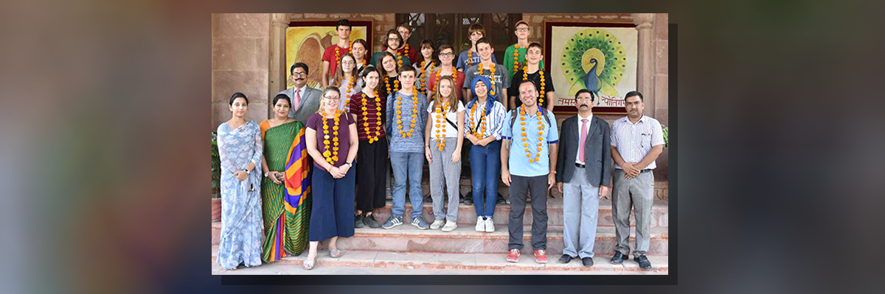
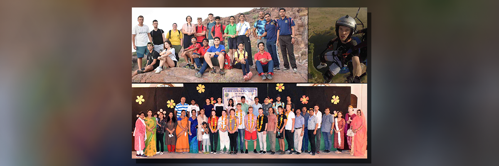
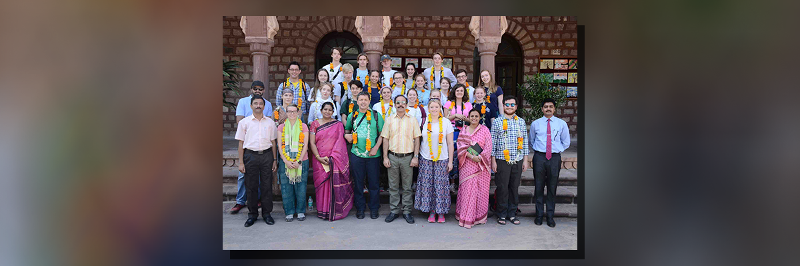

Friedrich-Eugens-Gymnasium Stuttgart Visit
Students and teachers delegation FEG Stuttgart, Germany visited the school campus. They spent a quality time in the
school premises. Friendly match of Kho-Kho were played between the students of both the schools.

Leonardo Da Vinci Campus, Cultural Exchange Visit
Mayoor Chopasni School organised the first cultural exchange program to strengthen the international relationship and
deepen the knowledge of foreign cultures through flexible and diverse activities. A seven member student delegation
from a German school Leonardo Da Vinci campus stayed with families of students of Mayoor Chopasni School for 21 days.
They experienced Indian teaching methods and curriculum. They were accompanied by the host students all the time. During
this cultural exchange the German students got acquainted to values and regional folklore and tried to imbibe the same.
The host students of Mayoor Chopasni School will visit Germany in month of May/ June next year and will stay with these
students in Berlin. The exchange programme helped the two schools to build the cultural gap and build a strong relation
between the two set of students coming from entirely different background.

Marlborough College, U.K Delegation Visit
Students and teachers delegation from Marlborough College, U.K. visited the school campus. They spent a quality time
in the school premises. Friendly match of Kho-Kho and football were played between the students of both the schools.
Prof Alex and Prof Virginia and two students planted a sapling in the school campus.